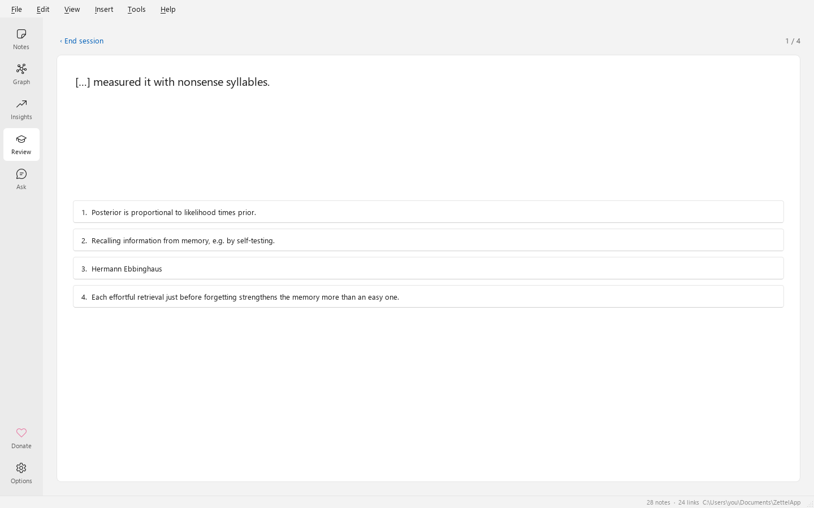

Tutorial: tus primeros 30 minutos
Un recorrido práctico. Cada paso dice qué hacer y qué deberías ver. Los pasos marcados como opcional necesitan Zotero, una clave de IA o Anki; sáltalos si no usas esas herramientas.
¿Eres nuevo en el método en sí? Lee primero ¿Qué es un Zettelkasten?. Lleva cinco minutos.
1. Instala y abre la bóveda de bienvenida
- Descarga ZettelApp-Setup.exe desde la última versión
y ejecútalo, o descomprime ZettelApp-Portable.zip y ejecuta
ZettelApp.exe. - Inicia ZettelApp.
Deberías ver la página Notas con once notas de ejemplo enlazadas en una bóveda nueva en Documentos\ZettelApp. «Te damos la bienvenida a ZettelApp» está abierta en el editor. Tras un momento, ZettelApp también ofrece la aventura opcional El príncipe perdido del Archivo; elige Ahora no si prefieres este recorrido escrito.
2. Crea una nota
- Pulsa Ctrl+N.
- Escribe un título, por ejemplo Repetición espaciada, y pulsa Enter para pasar al texto.
- Escribe una idea con tus propias palabras, en dos o tres frases: Repasar el material a intervalos crecientes favorece la memoria a largo plazo, porque cada repaso ocurre justo antes del olvido.
Deberías ver la nota aparecer al principio de la lista. No hay botón Guardar: las notas se guardan mientras
escribes. El ID bajo el título (por ejemplo 20261027153012) es la dirección permanente de la nota.
3. Añade etiquetas
Haz clic en Añadir etiqueta bajo el título, escribe learning y pulsa Enter. Añade también memory.
Deberías ver dos pastillas, #learning y #memory. El filtro de etiquetas sobre la lista ahora las ofrece,
y al escribir tag:memory en el cuadro de búsqueda se encuentra la nota.
4. Enlaza con otra nota
- Crea una segunda nota (Ctrl+N) titulada Curva del olvido, con una frase: La memoria se desvanece rápidamente si la información no se repasa.
- Vuelve a Repetición espaciada (haz clic en ella en la lista). En el texto, escribe
[[y luegoCurv. - Elige Curva del olvido en la lista de autocompletado y pulsa Enter.
Deberías ver [[Curva del olvido]] subrayado en el texto. En el panel lateral, Curva del olvido
aparece en Enlaces. Haz clic en el botón del ojo (Vista dividida) de la barra de herramientas: la vista previa muestra un
enlace en el que se puede hacer clic.
5. Di cómo se relacionan las notas
Convierte el enlace en un enlace con tipo poniendo supports:: delante:
supports:: [[Curva del olvido]]
Deberías ver el enlace listado como Apoya a en el panel lateral. Abre Curva del olvido: sus
Retroenlaces dicen Repetición espaciada: Apoyada por, porque supports es un tipo de enlace dirigido.
Los [[enlaces]] simples significan Relacionada con.
6. Usa un enlace sugerido
Escribe unas cuantas notas más sobre ideas relacionadas, por ejemplo Recuperación activa e Intercalado, cada una con una
o dos frases y la etiqueta learning. Luego abre una de ellas y mira Enlaces sugeridos en el
panel lateral.
- Haz clic en Enlazar para aceptar una sugerencia. La flecha pequeña junto a él elige un tipo de enlace.
- Haz clic en ✕ para descartar una que no encaje.
- Pasa el cursor sobre una sugerencia para ver por qué se propuso: la evidencia de cada medida a favor o en contra.
Qué aprende el modelo: las sugerencias aceptadas se convierten en enlaces, que entrenan al clasificador como ejemplos positivos. Las descartadas se recuerdan como ejemplos negativos y no se vuelven a sugerir para ese par. Las sugerencias mejoran cuanto más las uses. Consulta Sugerencias de enlaces.

7. Añade una imagen
Copia cualquier imagen (por ejemplo con Win+Shift+S), haz clic en el texto de la nota y pulsa Ctrl+V. También puedes arrastrar un archivo de imagen o usar Insertar ▸ Imagen….
Deberías ver  en el texto y la imagen en la vista previa. Como es la primera
imagen de la nota, también se convierte en la imagen de la nota, que se muestra junto al título y dentro del círculo de la nota
en el grafo.
8. Esboza un mapa mental
- Abre la pestaña Mapa mental y haz clic en Añadir idea.
- Pulsa Tab para añadir una idea hija, Enter para una hermana, F2 para renombrar y Supr para eliminar. Las teclas de flecha se mueven entre ideas.
- Ahora haz clic en Desde enlaces y confirma que puede reemplazar el mapa que acabas de dibujar.
Deberías ver un mapa mental creado a partir de los enlaces de la nota, agrupado por tipo de enlace, con los enlaces propios de cada nota enlazada un nivel más abajo. Haz clic derecho en cualquier idea para enlazarla con una nota. El botón de exportar guarda PNG, SVG o FreeMind.

9. Crea tarjetas y repásalas
Añade estas líneas al texto de Repetición espaciada:
Q: ¿Por qué espaciar los repasos?
A: Cada recuperación con esfuerzo justo antes del olvido fortalece la memoria.
{{c1::Hermann Ebbinghaus}} describió la curva del olvido.
Deberías ver Tarjetas (2) en la pestaña: una tarjeta de pregunta y una tarjeta cloze. Ahora abre Repaso (Ctrl+4) y haz clic en Empezar repaso.
- Pulsa Espacio para mostrar la respuesta.
- Califícate con 1–4 (Otra vez, Difícil, Bien, Fácil).
El calendario SM-2 decide cuándo vuelve cada tarjeta. Prueba también Cuestionario de práctica ▸ Opción múltiple o Adivina la nota.

10. Explora el grafo
Abre Grafo (Ctrl+2).
- Arrastra las notas, usa la rueda para hacer zoom y pasa el cursor sobre una nota para resaltar sus vecinas.
- Selecciona una nota en la página Notas, vuelve y haz clic en Local; luego cambia Profundidad a 1, 2 o 3.
- Establece Colorear por en Grupos: k-means. Las notas se agrupan por significado y la leyenda nombra cada grupo con sus palabras clave.
- Activa Agrupar para juntar cada grupo sobre un fondo sombreado.
- Haz clic en 3D, arrastra para orbitar y prueba Rotar automáticamente.

11. Revisa tus Estadísticas
Abre Estadísticas (Ctrl+3) para ver recuentos, notas por mes, etiquetas principales, enlaces por tipo y las notas más conectadas. Notas sin enlazar es tu lista de tareas: enlázalas con algo. Cada gráfico tiene una vista de tabla.
12. Cita un elemento de Zotero y escribe una nota bibliográfica (opcional)
Con Zotero 7+ abierto y Permitir que otras aplicaciones de este equipo se comuniquen con Zotero activado en su Ajustes ▸ Avanzado:
- Elige Insertar ▸ Referencia de Zotero…, busca un elemento y haz clic en Insertar cita: un enlace como Ebbinghaus (1885) que abre el elemento en Zotero.
- Hazlo de nuevo y haz clic en Nueva nota bibliográfica.
Deberías ver una nota nueva con la referencia, los enlaces Abrir en Zotero y Abrir PDF, el resumen y las
secciones Ideas clave / Mis ideas, con la etiqueta literature. Consulta Zotero.
13. Pregunta a tus notas (opcional)
- En Herramientas ▸ Opciones ▸ Asistente de IA, elige un proveedor (Anthropic, OpenAI o Z.ai), pega tu clave de API y haz clic en Probar conexión.
- Abre Preguntar (Ctrl+5) y pregunta: ¿Cómo trabajan juntos el espaciado y la recuperación?
Deberías ver una respuesta que cita tus notas como enlaces y la lista exacta de fuentes enviadas. Solo esas notas y tu pregunta salen de tu equipo. Consulta Pregunta a tus notas.
14. Exporta un subgrafo y sincroniza con Anki (opcional)
- Abre una nota, elige Archivo ▸ Exportar… (Ctrl+Shift+E), selecciona Nota actual y notas enlazadas, profundidad 2 y el formato Website.
- Abre el
index.htmldel zip en tu navegador: un pequeño sitio web de esa parte de tu Zettelkasten. - Con Anki abierto y el complemento AnkiConnect (código
2055492159) instalado, abre Repaso y haz clic en Sincronizar con Anki. El enlace de fuente de cada tarjeta abre la nota en ZettelApp.
Consulta Exportar e importar y Anki.
15. Sabe dónde viven tus datos
- Tus notas viven en la carpeta de la bóveda (Archivo ▸ Mostrar bóveda en el Explorador de archivos):
zettel.dbmásassets. - Se hace una copia de seguridad automáticamente una vez al día, y Archivo ▸ Hacer copia de seguridad ahora hace una en cualquier momento.
- Las notas eliminadas van a la papelera, bajo la lista de notas, donde puedes restaurarlas.
Más detalles en Privacidad y seguridad.
Eso es todo. Sigue escribiendo una idea por nota, enlaza cada nota nueva con un motivo y deja que las sugerencias y el grafo te muestren lo que tienes. Los atajos están en Atajos de teclado.